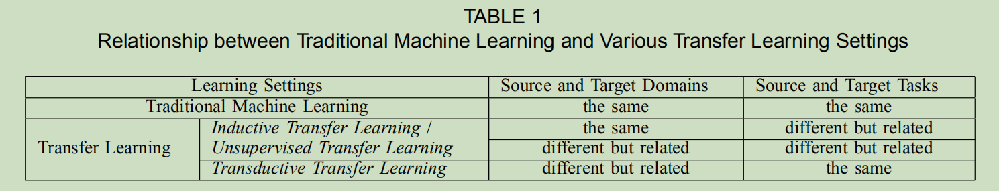

Overview
Domain
是一个特定的domain(域),由feature space(特征空间),marginal probability distribution(边缘分布)构成,.
是task(任务), 由标签空间,目标预测函数构成,它不是由观测得到的,但是可以由训练数据()学习得到,从概率的观点看,可以写成.
Transfer Learning
定义: Given a source domain and learning task ,a target domain and learning task , transfer learning aims to help improve the learning of the target predictive function in using the knowledge in and , where , or .
- 源域和目标域不同,则表示(1)源域和目标域的特征空间不同(,对应着文档的两个数据集用不同的语言来描述的),或者(2)特征空间相同,但边缘概率分布不同(, where ,对应着源域文档和目标域文档针对着不同的主题).
- 对于给定的域,学习任务不同()则表示(1)源域和目标域的标签空间不同(,对应着比如:源域有2种文档类别,而目标域有10种文档类别),或者(2)源域和目标域的条件概率分布不同(, where , 对应着比如源域和目标域的文档的类别很不均衡)
- 当(源域与目标域相同),且(源任务与目标任务相同),则学习问题变成了
传统的机器学习问题.
迁移学习分类
关于迁移学习,我们有以下3类问题需要解决:
(1)迁移什么?
在域和任务之间,哪部分知识可以用作迁移.有些知识只针对在特定域或任务,有些知识可以是不同域之间所共有的,那么它们或许可以提高目标域或目标任务的性能.在发现了哪部分知识可以被迁移之后,学习算法需要被转变为知识的迁移,这对应着"怎样迁移"的问题.
(2)怎样迁移?
(3)何时迁移?
“怎样迁移"提出了在哪种情形下,迁移的方法可以起作用.我们同样也对在哪种情形下,知识应当不被迁移感兴趣.在一些情形中,源域和目标域是不相关的,暴力迁移可能不成功.最糟时,可以会损害目标域的学习性能,这种情形被称为负迁移.大多数当前的迁移学习的工作都集中在"迁移什么"与"怎样迁移”,默认源域和目标域是彼此相关的.然而,这样避免负迁移是一个重要的公开问题.
基于迁移学习的定义,我们将传统机器学习和不同的迁移学习子集进行的总结,我们将迁移学习划分为3个子集,基于不同的场景下的源域和目标域,源任务和目标任务,划分为归纳迁移学习(inductive transfer learning),直推式迁移学习(transductive transfer learning)和无监督迁移学习(unsupervised transfer learning)

- 在
归纳迁移学习的子集中,目标任务与源任务不同(无视源域和目标域是否相同).在这种情况下,一些在目标域标记的数据被需要来归纳出一个目标预测模型,用于目标域.另外,根据源域中存在标记和未标记的数据的不同情形,我们可以将归纳迁移学习进一步划分为2类:- 源域有大部分的标记的数据.这种情形下,归纳迁移学习子集与多任务学习子集是相似的.然而,归纳迁移学习的目标在于通过从源任务传递知识来让目标任务获取高的性能.而多任务学习在于试图让源任务与目标任务同时学习.
- 源域中没有标记的数据.在这种情形下,归纳迁移学习子集与自学习子集是相似的.在自学习子集中,源域和目标域的标签空间可能是不同的,这表明源域不能被直接使用.因此,这等同于归纳学习子集中源域中标记的数据不可获得.
- 在
直推式迁移学习子集中,源任务和目标任务是相同的(尽管源域和目标域是不同的).在这种情形下,目标域中没有可以使用的标记了的数据,在源域中却有许多可以使用的标记了的数据.另外,根据源域和目标域不同的情形,我们可以将直推式迁移学习进一步划分为2类:- 源域和目标域的特征空间不同()
- 源域和目标域的特征空间相同,,但是输入数据的边缘概率分布是不同的,.后面这种情况与知识迁移在文本分类,样本选择偏差(sample selection bias)或co-variate shift下的域自适应是相关的,它们的假设是相似的.
- 最后,在
无监督迁移学习子集中,与直推式迁移学习子集相似,目标任务与源任务不同,但却相关.然而,无监督学习专注于解决在目标域下的无监督学习任务,比如聚类,降维和密度估计(density estimation).这种情形下,在训练模型时,源域和目标域下都没有可以使用的标记了的数据.
迁移学习不同的子集和相关区域的关系都被总结在Table 2和Figure 2中.
Inductive transfer learning(归纳迁移学习)
归纳迁移学习目标在于通过使用与()中的知识,帮助改善目标域中的目标预测函数
迁移学习的方法在以上三个不同设定可以基于"迁移什么"来划分成为4个类别.
实例的知识迁移
归纳迁移学习子集的实例迁移方法是直观且吸引人的:尽管源域数据不能被直接重用,这里仍然存在特定部分的数据可以与目标域中标记了的数据一起重用.
Dai 提出的提升算法,TrAdaBoost,是算法AdaBoost的扩展版,用于解决归纳迁移学习问题.TrAdaBoost假设源域和目标域使用相同的特征和标签集合,但是数据在源域和目标域的分布是不同的.另外,TrAdaBoost假设,由于源域和目标域不同的数据分布,一些源域数据可能对于目标域的学习是有帮助的,但有一些数据可能不但没有帮助,反而有害.该算法通过迭代的重赋源域数据的权重来降低"bad"的效果并鼓励"good"源域数据来对目标域贡献更多.对于每一轮的迭代,TrAdaBoost根据有权重的源域和目标域的数据来训练分类器.错误率只根据目标数据来计算.此外,TrAdaBoost使用了与AdaBoost相同的策略来更新目标域中不正确的分类样本,同时使用一个与AdaBoost不同的策略来更新源域中不正确的分类样本.
特征表示的知识迁移
归纳迁移学习问题中的特征表示的迁移方法目的在于找到"good"特征表示来最小化域分歧和类别或回归模型错误.对于不同类型的源域数据找到"good"特征表示的策略是不同的.如果源域中有许多标记数据可用,监督学习方法能被用来构建一个特征表示.这与多任务学习中的共同特征学习是相似的.如果源域中没有标记的数据,无监督学习方法被提出来构建特征的表示.
有监督的特征构建
基于归纳迁移学习子集的有监督特征构建方法与多任务学习中使用的相似.基本的想法是学习一个相关类别共享的低维的表示.另外,所学的新的表示也能够减少每个任务的类别或回归模型的错误.Argyriou[40]针对多任务学习提出了一个系数特征学习方法.在归纳迁移学习子集中,通过解决下式的优化问题,公共特征能够被学习
在这个式子中,和分别表示源域和目标域中的任务.是一个参数矩阵.是的正交阵(映射函数)用于将原始的高维数据映射到低维数据的表示.的-norm(范数)被定义为.优化问题(1)同时estimates了低维表示和参数.优化问题(1)可以被进一步转变成为一个等价的凸优化公式并被有效解决.在后序工作,Argyriou[41]提出了一个基于矩阵的spectral regularization框架用于多任务结构的学习.
Lee[42]从一个类似的相关预测任务中提出了一个凸优化算法来同时学习meta-priors和特征权重. meta-priors能够在不同的任务中迁移. Jebara[43]通过在多任务学习中使用SVMs来选择特征. Ruckert[54]设计了一个基于核的方法来进行归纳迁移,目的在于找到一个合适的核来用于目标数据.
无监督的特征构建
在[22]中, Raina提议应用稀疏编码[55],它是一个无监督特征构建方法,用于学习迁移学习中高等级的特征.这个方法的基本主意由两步构成.第一步,高级别的基向量在源域数据上可以被学习到,这可以通过解决下式的优化问题(2)
在这个方程中,是一个新的表示,由基,输入和是一个系数来平衡特征构建项和正则化项.在学习了基向量以后,第二步,一个优化算法(3)被应用在目标域数据基于基向量来学习高级别特征
最后,判别算法可以被应用在与对应的标签来学习分类或回归模型在目标域使用.该方法的一个缺点是，在优化问题(2)中，在源域上学习的所谓高级基向量可能不适合在目标域中使用。
近年来，多种学习方法被广泛应用于迁移学习。在[44]中，Wang和Mahadevan提出了一种基于流行对齐没有correspondences的方法Procrustes analysis，它可以通过对齐流形跨域传递知识。
参数知识迁移
大多数归纳迁移学习设置的参数传递方法都假设相关任务的个别模型应该共享某些参数或超参数的先验分布。本节介绍的大多数方法，包括正则化框架和分层贝叶斯框架，旨在在多任务学习下工作。然而，它们可以很容易地修改为迁移学习。如前所述，多任务学习试图同时和完美地学习源任务和目标任务，然而迁移学习的目的仅仅是通过利用源域数据来提高目标域的性能。因此，在多任务学习中，源和目标数据的损失函数的权重相同。相反,在转移学习中，不同域的损失函数中的权重可以是不同的。直观上,我们可以给目标域的损失函数分配更大的权重，以确保我们能够在目标域中获得更好的性能。
Lawrence和Platt[45]提出了一种基于高斯过程(GP)的有效算法MT-IVM来处理多任务学习案例。MT-IVM试图通过共享相同的GP prior来学习多个任务上高斯过程的参数。Bonilla等人[46]还对GP环境下的多任务学习进行了研究。作者提出在任务上使用自由形式协方差矩阵来建模任务间依赖关系，其中GP prior用于诱导任务之间的相关性。Schwayghofer等人[47]提出了一种分层贝叶斯框架(HB)和GP相结合的多任务学习方法。
一些学者除了对GP模型的先验进行传递外，还提出了在正则化框架下进行支持向量机参数传递的方法。Evgeniou和Pontil[48]将Hb的概念借用到支持向量机中，用于多任务学习。该方法假设每个任务的SVMS中的参数w可以分为两个项。一个是任务上的公共项，另一个是特定于任务的项.在归纳迁移学习中,
和是SVMs的参数,分别用于源任务和目标学习任务.是公共参数,和是针对源任务和目标任务特点的参数.通过假设作为任务的超平面,一个扩展版适用于多任务学习的SVMs可以被写成如下形式
通过解决以上的优化问题,我们可以同时学习到参数和.
一些研究人员进一步研究了参数传递方法。Gao等[49]提出了一种局部加权的总体学习框架，用于组合多个模型用于迁移学习，根据模型在目标域中的每个测试样例的预测强度来动态分配权重.
关系知识迁移
与其他三种情况不同，关系知识迁移方法处理关系域中的迁移学习问题,在那里的数据是非独立同分布的(non-i.i.d.),可以用网络数据和社会网络数据等多种关系来表示。这种方法并不按照传统的假设来假设认为从每个域提取的数据是独立的和相同分布的(i.i.d.)。它试图将数据之间的关系从源域转移到目标域。在此背景下，提出了统计关系学习技术来解决这些问题。
Mihalkova等人[50]提出了一种跨关系域用马尔可夫逻辑网络(MLN)传递关系知识的算法Tamar。MLN[56]是一种强大的形式主义，它将一阶逻辑的紧凑表达性与概率灵活性相结合，用于统计关系学习。
直推式迁移学习
Arnold等[58]首次提出了术语直推式迁移学习，要求源和目标任务相同，尽管域可能不同。除了这些条件,它们还要求目标域中的所有未标记数据在训练时都可用，但我们认为可以放松这种条件；相反，在我们定义的直推式迁移学习子集中，我们只要求在训练时看到部分未标记的目标数据，以获得边缘概率.
请注意，单词“transtive”有几个意思。在传统的机器学习环境中，直推式迁移学习[59]是指要求在训练时看到所有测试数据，而所学习的模型不能被重用在未来的数据。因此,当一些新的测试数据到来时,它们必须与所有现有数据一起分类。在我们对迁移学习的分类中，相反,我们使用了"transductive"这个词来强调在这种类型的迁移学习中，任务必须是相同的，并且在目标域中必须有一些无标记数据。